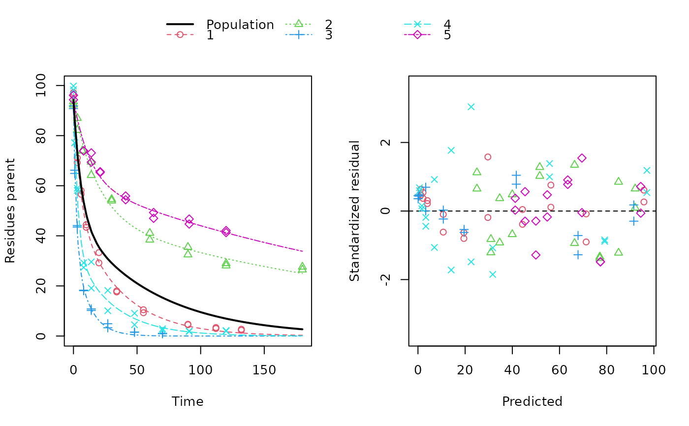
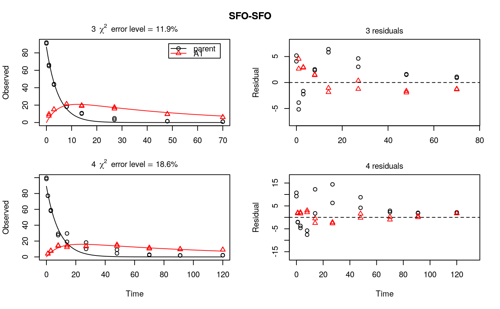
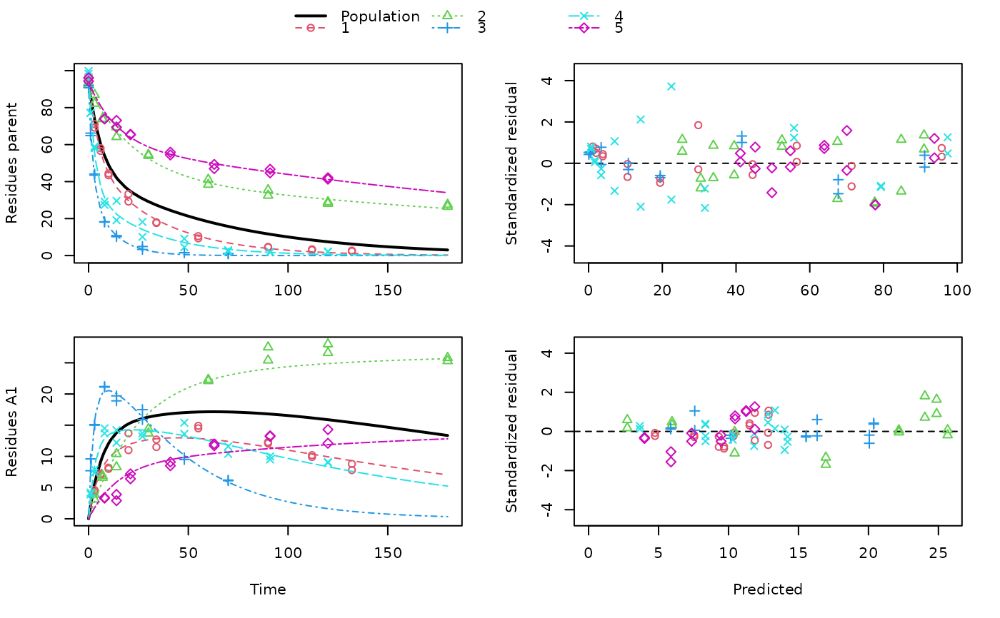

This functions sets up a nonlinear mixed effects model for an mmkin row object. An mmkin row object is essentially a list of mkinfit objects that have been obtained by fitting the same model to a list of datasets.
# S3 method for mmkin
nlme(
model,
data = "auto",
fixed = lapply(as.list(names(mean_degparms(model))), function(el) eval(parse(text =
paste(el, 1, sep = "~")))),
random = pdDiag(fixed),
groups,
start = mean_degparms(model, random = TRUE, test_log_parms = TRUE),
correlation = NULL,
weights = NULL,
subset,
method = c("ML", "REML"),
na.action = na.fail,
naPattern,
control = list(),
verbose = FALSE
)
# S3 method for nlme.mmkin
print(x, digits = max(3, getOption("digits") - 3), ...)
# S3 method for nlme.mmkin
update(object, ...)An mmkin row object.
Ignored, data are taken from the mmkin model
Ignored, all degradation parameters fitted in the mmkin model are used as fixed parameters
If not specified, no correlations between random effects are set up for the optimised degradation model parameters. This is achieved by using the nlme::pdDiag method.
See the documentation of nlme
If not specified, mean values of the fitted degradation parameters taken from the mmkin object are used
See the documentation of nlme
passed to nlme
passed to nlme
passed to nlme
passed to nlme
passed to nlme
passed to nlme
passed to nlme
An nlme.mmkin object to print
Number of digits to use for printing
Update specifications passed to update.nlme
An nlme.mmkin object to update
Upon success, a fitted 'nlme.mmkin' object, which is an nlme object with additional elements. It also inherits from 'mixed.mmkin'.
Note that the convergence of the nlme algorithms depends on the quality of the data. In degradation kinetics, we often only have few datasets (e.g. data for few soils) and complicated degradation models, which may make it impossible to obtain convergence with nlme.
As the object inherits from nlme::nlme, there is a wealth of
methods that will automatically work on 'nlme.mmkin' objects, such as
nlme::intervals(), nlme::anova.lme() and nlme::coef.lme().
ds <- lapply(experimental_data_for_UBA_2019[6:10],
function(x) subset(x$data[c("name", "time", "value")], name == "parent"))
# \dontrun{
f <- mmkin(c("SFO", "DFOP"), ds, quiet = TRUE, cores = 1)
library(nlme)
f_nlme_sfo <- nlme(f["SFO", ])
f_nlme_dfop <- nlme(f["DFOP", ])
anova(f_nlme_sfo, f_nlme_dfop)
#> Model df AIC BIC logLik Test L.Ratio p-value
#> f_nlme_sfo 1 5 625.0539 637.5529 -307.5269
#> f_nlme_dfop 2 9 495.1270 517.6253 -238.5635 1 vs 2 137.9269 <.0001
print(f_nlme_dfop)
#> Kinetic nonlinear mixed-effects model fit by maximum likelihood
#>
#> Structural model:
#> d_parent/dt = - ((k1 * g * exp(-k1 * time) + k2 * (1 - g) * exp(-k2 *
#> time)) / (g * exp(-k1 * time) + (1 - g) * exp(-k2 * time)))
#> * parent
#>
#> Data:
#> 90 observations of 1 variable(s) grouped in 5 datasets
#>
#> Log-likelihood: -238.6
#>
#> Fixed effects:
#> list(parent_0 ~ 1, log_k1 ~ 1, log_k2 ~ 1, g_qlogis ~ 1)
#> parent_0 log_k1 log_k2 g_qlogis
#> 94.1702 -1.8002 -4.1474 0.0324
#>
#> Random effects:
#> Formula: list(parent_0 ~ 1, log_k1 ~ 1, log_k2 ~ 1, g_qlogis ~ 1)
#> Level: ds
#> Structure: Diagonal
#> parent_0 log_k1 log_k2 g_qlogis Residual
#> StdDev: 2.488 0.8447 1.33 0.4652 2.321
#>
plot(f_nlme_dfop)

endpoints(f_nlme_dfop)
#> $distimes
#> DT50 DT90 DT50back DT50_k1 DT50_k2
#> parent 10.79857 100.7937 30.34193 4.193938 43.85443
#>
ds_2 <- lapply(experimental_data_for_UBA_2019[6:10],
function(x) x$data[c("name", "time", "value")])
m_sfo_sfo <- mkinmod(parent = mkinsub("SFO", "A1"),
A1 = mkinsub("SFO"), use_of_ff = "min", quiet = TRUE)
m_sfo_sfo_ff <- mkinmod(parent = mkinsub("SFO", "A1"),
A1 = mkinsub("SFO"), use_of_ff = "max", quiet = TRUE)
m_dfop_sfo <- mkinmod(parent = mkinsub("DFOP", "A1"),
A1 = mkinsub("SFO"), quiet = TRUE)
f_2 <- mmkin(list("SFO-SFO" = m_sfo_sfo,
"SFO-SFO-ff" = m_sfo_sfo_ff,
"DFOP-SFO" = m_dfop_sfo),
ds_2, quiet = TRUE)
f_nlme_sfo_sfo <- nlme(f_2["SFO-SFO", ])
plot(f_nlme_sfo_sfo)

# With formation fractions this does not coverge with defaults
# f_nlme_sfo_sfo_ff <- nlme(f_2["SFO-SFO-ff", ])
#plot(f_nlme_sfo_sfo_ff)
# For the following, we need to increase pnlsMaxIter and the tolerance
# to get convergence
f_nlme_dfop_sfo <- nlme(f_2["DFOP-SFO", ],
control = list(pnlsMaxIter = 120, tolerance = 5e-4))
plot(f_nlme_dfop_sfo)

anova(f_nlme_dfop_sfo, f_nlme_sfo_sfo)
#> Model df AIC BIC logLik Test L.Ratio p-value
#> f_nlme_dfop_sfo 1 13 843.8547 884.6201 -408.9274
#> f_nlme_sfo_sfo 2 9 1085.1821 1113.4043 -533.5910 1 vs 2 249.3274 <.0001
endpoints(f_nlme_sfo_sfo)
#> $ff
#> parent_sink parent_A1 A1_sink
#> 0.5912432 0.4087568 1.0000000
#>
#> $distimes
#> DT50 DT90
#> parent 19.13518 63.5657
#> A1 66.02155 219.3189
#>
endpoints(f_nlme_dfop_sfo)
#> $ff
#> parent_A1 parent_sink
#> 0.2768574 0.7231426
#>
#> $distimes
#> DT50 DT90 DT50back DT50_k1 DT50_k2
#> parent 11.07091 104.6320 31.49737 4.462383 46.20825
#> A1 162.30519 539.1662 NA NA NA
#>
if (length(findFunction("varConstProp")) > 0) { # tc error model for nlme available
# Attempts to fit metabolite kinetics with the tc error model are possible,
# but need tweeking of control values and sometimes do not converge
f_tc <- mmkin(c("SFO", "DFOP"), ds, quiet = TRUE, error_model = "tc")
f_nlme_sfo_tc <- nlme(f_tc["SFO", ])
f_nlme_dfop_tc <- nlme(f_tc["DFOP", ])
AIC(f_nlme_sfo, f_nlme_sfo_tc, f_nlme_dfop, f_nlme_dfop_tc)
print(f_nlme_dfop_tc)
}
#> Kinetic nonlinear mixed-effects model fit by maximum likelihood
#>
#> Structural model:
#> d_parent/dt = - ((k1 * g * exp(-k1 * time) + k2 * (1 - g) * exp(-k2 *
#> time)) / (g * exp(-k1 * time) + (1 - g) * exp(-k2 * time)))
#> * parent
#>
#> Data:
#> 90 observations of 1 variable(s) grouped in 5 datasets
#>
#> Log-likelihood: -238.4
#>
#> Fixed effects:
#> list(parent_0 ~ 1, log_k1 ~ 1, log_k2 ~ 1, g_qlogis ~ 1)
#> parent_0 log_k1 log_k2 g_qlogis
#> 94.04774 -1.82340 -4.16716 0.05686
#>
#> Random effects:
#> Formula: list(parent_0 ~ 1, log_k1 ~ 1, log_k2 ~ 1, g_qlogis ~ 1)
#> Level: ds
#> Structure: Diagonal
#> parent_0 log_k1 log_k2 g_qlogis Residual
#> StdDev: 2.474 0.85 1.337 0.4659 1
#>
#> Variance function:
#> Structure: Constant plus proportion of variance covariate
#> Formula: ~fitted(.)
#> Parameter estimates:
#> const prop
#> 2.23223147 0.01262395
f_2_obs <- update(f_2, error_model = "obs")
f_nlme_sfo_sfo_obs <- nlme(f_2_obs["SFO-SFO", ])
print(f_nlme_sfo_sfo_obs)
#> Kinetic nonlinear mixed-effects model fit by maximum likelihood
#>
#> Structural model:
#> d_parent/dt = - k_parent_sink * parent - k_parent_A1 * parent
#> d_A1/dt = + k_parent_A1 * parent - k_A1_sink * A1
#>
#> Data:
#> 170 observations of 2 variable(s) grouped in 5 datasets
#>
#> Log-likelihood: -473
#>
#> Fixed effects:
#> list(parent_0 ~ 1, log_k_parent_sink ~ 1, log_k_parent_A1 ~ 1, log_k_A1_sink ~ 1)
#> parent_0 log_k_parent_sink log_k_parent_A1 log_k_A1_sink
#> 87.976 -3.670 -4.164 -4.645
#>
#> Random effects:
#> Formula: list(parent_0 ~ 1, log_k_parent_sink ~ 1, log_k_parent_A1 ~ 1, log_k_A1_sink ~ 1)
#> Level: ds
#> Structure: Diagonal
#> parent_0 log_k_parent_sink log_k_parent_A1 log_k_A1_sink Residual
#> StdDev: 3.992 1.777 1.055 0.4821 6.483
#>
#> Variance function:
#> Structure: Different standard deviations per stratum
#> Formula: ~1 | name
#> Parameter estimates:
#> parent A1
#> 1.0000000 0.2049995
f_nlme_dfop_sfo_obs <- nlme(f_2_obs["DFOP-SFO", ],
control = list(pnlsMaxIter = 120, tolerance = 5e-4))
f_2_tc <- update(f_2, error_model = "tc")
# f_nlme_sfo_sfo_tc <- nlme(f_2_tc["SFO-SFO", ]) # No convergence with 50 iterations
# f_nlme_dfop_sfo_tc <- nlme(f_2_tc["DFOP-SFO", ],
# control = list(pnlsMaxIter = 120, tolerance = 5e-4)) # Error in X[, fmap[[nm]]] <- gradnm
anova(f_nlme_dfop_sfo, f_nlme_dfop_sfo_obs)
#> Model df AIC BIC logLik Test L.Ratio
#> f_nlme_dfop_sfo 1 13 843.8547 884.6201 -408.9274
#> f_nlme_dfop_sfo_obs 2 14 817.5338 861.4350 -394.7669 1 vs 2 28.32091
#> p-value
#> f_nlme_dfop_sfo
#> f_nlme_dfop_sfo_obs <.0001
# }